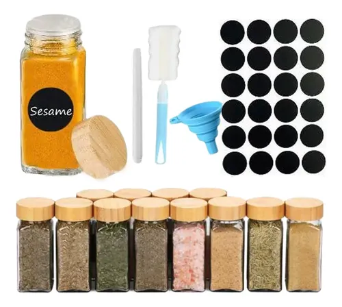

¿Aún usas plástico manchado? El cambio urgente al vidrio hermético

Todos tenemos ese cajón deprimente: una maraña de recipientes de plástico sin tapa, deformados por el microondas y manchados perpetuamente de naranja después de guardar espagueti o curry una sola vez. No solo se ven horribles, sino que podrían estar liberando químicos en tu comida.
Decidimos limpiar por completo nuestros gabinetes y poner a prueba un set moderno de recipientes herméticos de vidrio con tapas de bambú. Queríamos ver si la inversión inicial más alta compensa a largo plazo y si son tan prácticos como parecen en los videos de organización de despensas.
El problema de calentar plástico
Aunque muchos envases de plástico dicen ser "aptos para microondas" y "libres de BPA", los científicos siguen descubriendo otros plastificantes que se filtran en los alimentos cuando se exponen a altas temperaturas. El vidrio borosilicato, por otro lado, es un material inerte. Puedes meterlo al microondas o incluso al horno (sin la tapa) y no liberará absolutamente nada en tu almuerzo.
Esa fue la primera gran ventaja que notamos: la comida recalentada en vidrio sabe mucho mejor, no absorbe los olores de la nevera ni le transfiere sabores plásticos a la salsa de tomate.
Ordena tu cocina y mejora tu salud. Revisa este set premium.
Ver disponibilidad de los RecipientesEstética y organización (El efecto Pinterest)
Las tapas de bambú con sello de silicona cambian por completo el aspecto de tu refrigerador. Al ser de vidrio transparente, puedes ver exactamente qué sobra tienes sin tener que abrir cuatro tapas diferentes para encontrar el pollo. La organización es mucho más limpia, apilable y motivadora para hacer "meal prep" (preparación de comidas) los domingos.
El sello hermético de silicona demostró ser excelente. Hicimos la prueba de llenarlos con sopa y ponerlos de cabeza: no hubo ni una sola gota de derrame, lo que los hace perfectos para llevar al trabajo en la mochila.
Los aspectos negativos
El vidrio tiene dos enemigos obvios: la gravedad y el peso. Llevar tres de estos recipientes llenos de comida en tu bolsa para el trabajo añade un peso considerable comparado con el plástico ligero. Además, si se te cae en la cocina, adiós almuerzo y hola a tener que barrer cristales.
Otro punto es el cuidado de las tapas de bambú. A diferencia de las tapas de plástico con solapas, la madera no debe meterse al microondas (se reseca y agrieta) ni dejarse sumergida en el fregadero durante horas. Deben lavarse a mano y secarse bien para evitar que el sello de silicona genere moho.
Conclusión
Tirar todos tus envases plásticos viejos y cambiarlos por un set unificado de vidrio es uno de los pequeños placeres adultos más satisfactorios. Gastas más una sola vez, pero a cambio obtienes tranquilidad sobre la salud de tu comida, una nevera que parece sacada de una revista y recipientes que nunca se mancharán de salsa roja.
Si acostumbras llevar almuerzo al trabajo o preparar las comidas de toda la semana, este set es una mejora de calidad de vida que no sabías que necesitabas con urgencia.